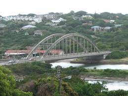

The Wild Coast of South Africa, home to well-known spots like Coffee Bay and Mazeppa Bay, is all about natural drama. Jade-green grass ices the hills and mountains, and black rocky cliffs plummet into the wild blue waters below. One of the most iconic of the natural wonders of the Wild Coast is Hole in the Wall in Coffee Bay. Living up to its name, this is a massive hole carved by the waves in a free-standing mountain (or island) in the water. The mountain is impressive in stature, standing proud like a sentry at the shores of the Eastern Cape. The waves crash around it and burst through the hole; creating a stunning display of the power and magnitude of the ocean. In front of the Hole in the Wall, there is a long shallow area that is teeming with life. This is ideal for families with little ones that enjoy splashing about in the warm waters of the east coast of South Africa. It is also popular for snorkellers because, just centimetres from the surface of the water, loads of marine species can be enjoyed.

Port Alfred is a small town with a population of just under 26,000[1] in the Eastern Cape province of South Africa. It is situated on the eastern seaboard of the country at the mouth of the Kowie River, almost exactly halfway between the larger cities of Gqeberha and East London and 30 kilometres (19 mi) west of Cannon Rocks.
| Firstname | Surname |
|---|---|
| Sive | Cwala |
| Ndonabile | Mloto |
| Yandani | Ngcolo |
| Clarence | Maxakato |
| Amanda | Ntwana |
| Alungile | Mncono |
| Bonginkosi | Tom |